Designed Asthma Connect, a service that would support the transition of children (4–10 years) from parental management to self-management of their asthma care.
Dates: March 2017 - May 2017
Team: Scott Dombkowski, Delanie Ricketts, Ji Tae Kim, and Dalia Dorantes
Exploratory Research
We started our research process with broad explorations of potential stakeholders, ranging from parents/caregivers, school administrators, to national organizations like the EPA. We also looked at a broad range of data sources that could be integrated into our service, focusing mainly on different types of asthma triggers such as pollen, dust, and tobacco smoke.
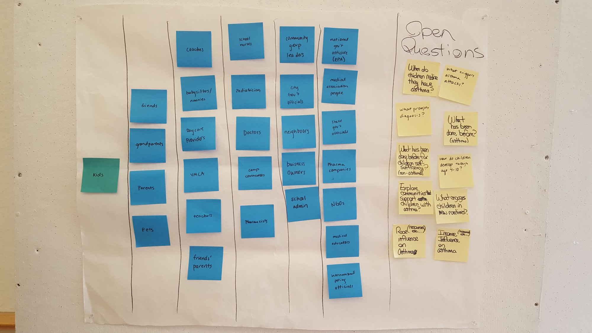
Early Stakeholder Map

Stakeholder Map
Primary Research
In tandem with our exploratory research efforts, we contacted people we knew who had pediatic asthma. We heard alot about a lack of asthma awareness/knowledge throughout these conversations.
Secondary Research
To complement our exploratory and primary research, we looked into secondary sources to find populations with the most need for services. We found asthma severity to be higher in minority populations, such as Puerto Rican, American-Indian/Alaskan Native, African-American, and Filipino populations.

Asthma more prevalent in minority children
Additionally, we found that people living in low-income areas are more likely to have higher levels of indoor allergens, which we knew from our exploratory research were common asthma triggers. As shown in these pie graphs, households with lower-income (<$40,000) are more likely to have high allergen burdens than households with higher income levels.
Concept Development
Early on, our ideas remained broad even though we had zeroed in on a target audience of lower-income minority groups. We knew we wanted our service to provide personalized data and educational information in order to address the awareness issue.
However, it wasn’t until we focused in on an even smaller target audience of alternative caregivers (grandparents) that we were really able to make some progress on differentiating our service.
After analyzing the space we saw four areas we wanted to focus on.
First, we identified that asthma disproportionately affects minority children versus non-minority children. One doctor described the situation as almost reaching a public health crisis.
Minorities, non-minorities, and lower-income individuals had a lack of awareness about asthma. Children in inner-city communities are disproportionately exposed to triggers and their families do not know how to deal with them.
Next we identified a lack of access. Minority neighborhoods suffer from a lack of affordable and knowledgeable care options. These children do not have reliable access to doctors, clinics, urgent care, and most of the time their families have to rely on the emergency room.
Lastly, we saw a growing trend where grandparents and alternative caregivers are either raising children or taking a more significant role in the raising of a child.
We decided it made sense to focus on grandparents because more grandparents are living with their grandchildren in general, and, in particular, minority families are more likely to include grandparents that live at home. It is becoming more and more common for grandparents to act as their grandchild’s caregiver occasionally or regularly.
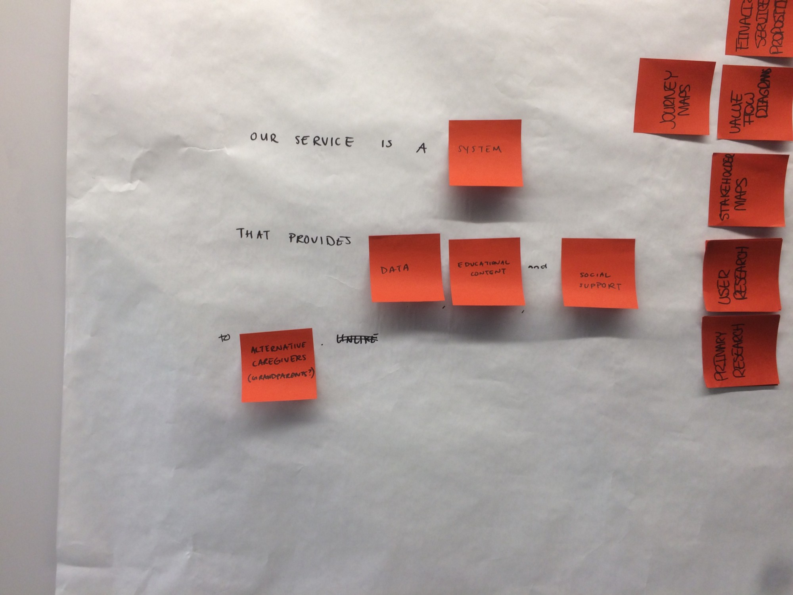
Service Proposition
Entry Points
Having decided on this specific population, we looked into entry points for our service. While any organization serving low income, minority grandparents could provide an entry point for our service, we decided to focus on food pantries because they represent a preexisting service linked to health that serves our target population. Typically, food pantries serve individuals and families earning less than 150% of the federal poverty line.
In our case, we focused on the Northside Food Pantry for our research. The Northside Food Pantry serves primarily seniors, veterans and families who live in the 15212, 15214 and 15233 zip codes. These zip codes have larger minority populations than average for Pittsburgh.
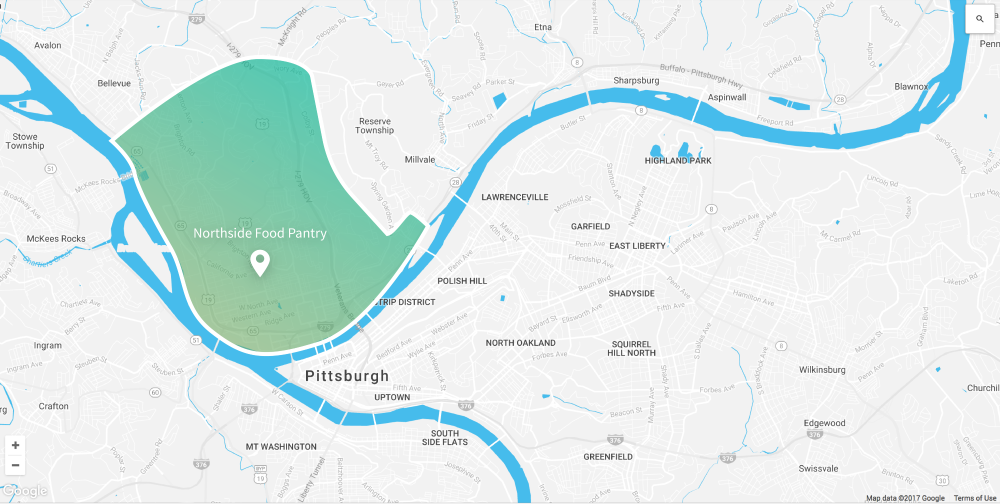
The area/neighborhood that Northside Food Pantry serves
Interviews at the Food Pantry
The grandparents we talked to confirmed that they acted as caregivers for their grandchildren. One interviewee said when he takes his grandson to the playground, it seems like as many as 60% of the caregivers are grandparents as well. Most of the grandparents we talked to said that they didn’t know how to help their grandchildren with their asthma. One interviewee said her grandchild’s doctor didn’t provide information about how to manage his asthma. When we discussed our ideas about a newsletter, app, and in-person consultations with participants, we received enthusiasm for all three ideas. However, some participants said a smartphone app might be difficult for them to navigate without the help of their grandchildren.
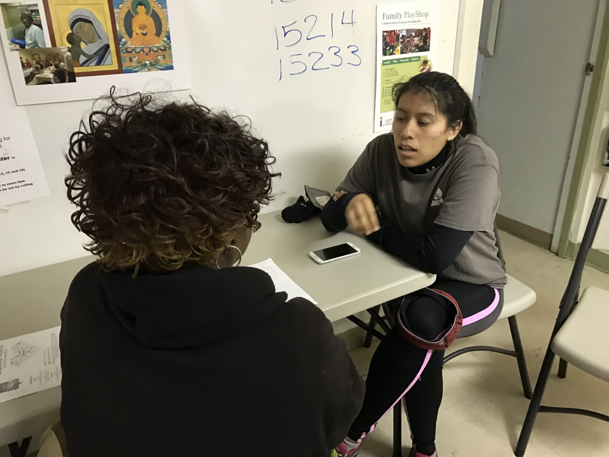
Interviewing community member
Blueprinting
This gave us enough feedback to start blueprinting our service. We did several blueprints for several different scenarios. This gave us insight into areas of opportunity, such as including a tear-away page in our magazine in order to remind parents when they could go back to the food pantry to talk with a medical resident, rather than having email or text message reminders. We also discussed different concepts that would build off of our targeted population's desire for in-person or paper-based forms of communication.
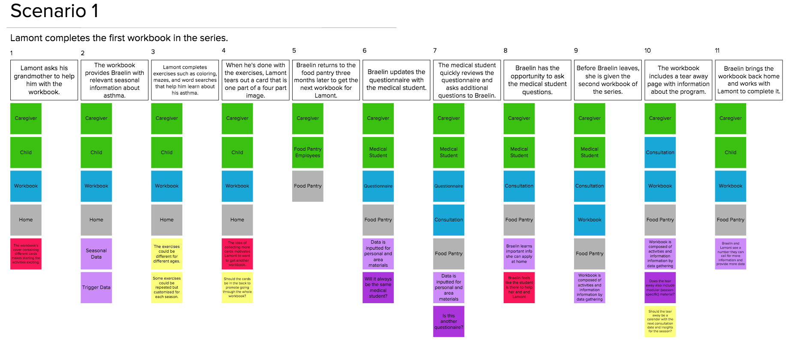
Scenario 1 Service Blueprint
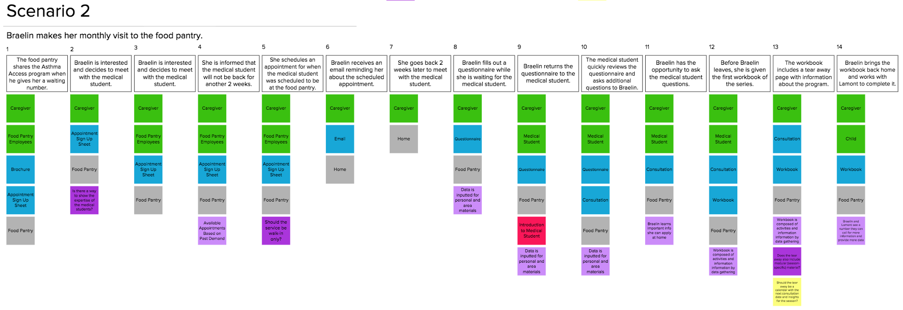
Scenario 2 Service Blueprint
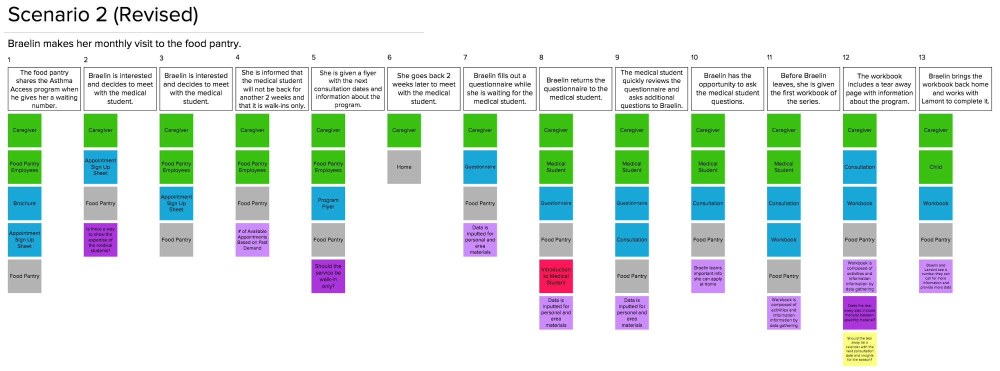
Scenario 2 Revised Service Blueprint
Prototyping
With a service blueprint in mind, we were ready to start prototyping our service's touchpoint, including our in-person medical resident consultations and children's magazine. As we were prototyping our children’s magazine, we were inspired by resources we found from PBS and Head Start, which focused on using games, stories, and creativity to help children learn self-management skills. At this point we also decided to pivot away from a data intensive service to using data more sparingly. This decision was based on our interviews with our target population in which we learned about a lack of access to technology that would enable a data-heavy service. We also decided we wanted our educational materials to be kid-friendly. This led to extremely simplified data visualizations that would enable young elementary school children's understanding.
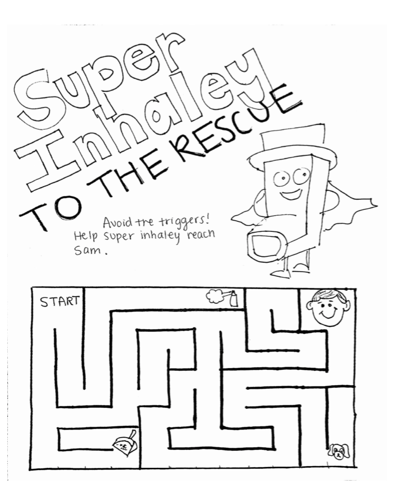
VIBES Magazine Prototype Maze Page
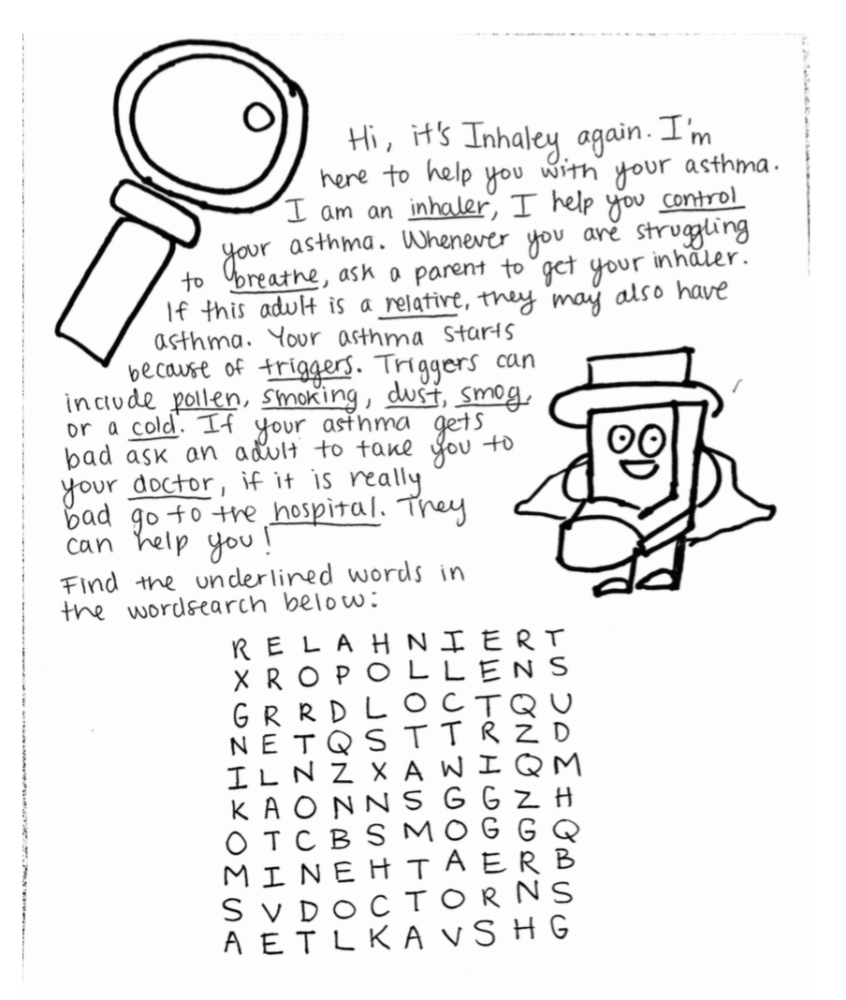
VIBES Magazine Prototype Word Search Page
Evaluative Research
When we went back to the food pantry to get reactions to our prototypes, we found that our magazine and consultations were well received. However, our service was missing something that could provide on-demand information.
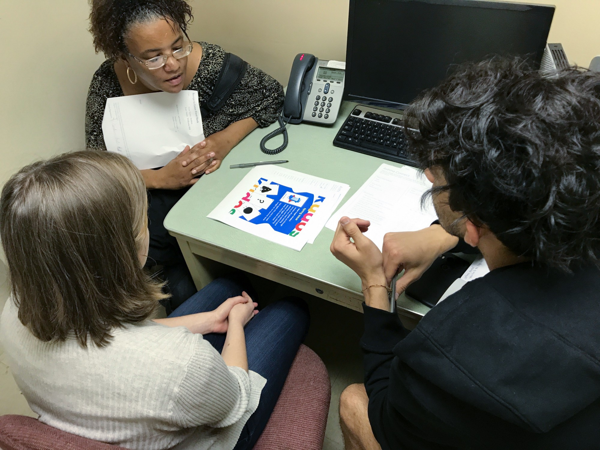
Evaluative Research Interviews at the Food Pantrys
Touchpoints
After the positive reception to our magazine and consultations, we went ahead and developed materials for these touchpoints in high fidelity.
Our service is centered on quarterly consultations. Where a medical resident comes to the food bank and has short meetings with caregivers to provide both general and personalized information about their child’s situation. We created questionnaires, so that doctors had background knowledge before speaking to the caregivers. We also created a flyer that could be hung or passed out at the food bank.
Asthma Connect Consultation Questionaire
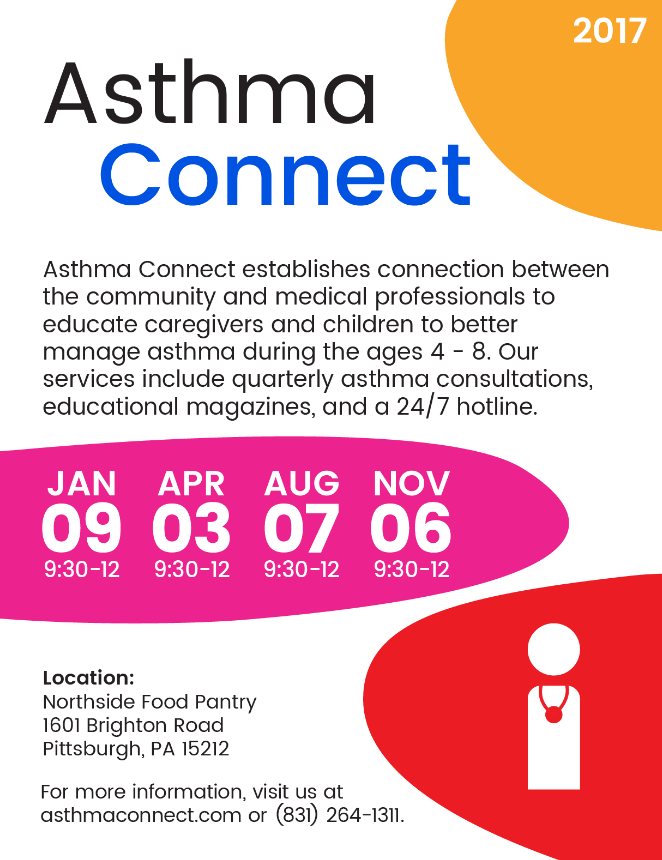
Asthma Connect Consultation Poster
We have a modular children’s magazine. Multiple versions are created based on age, the season, and different regions of the country. Grandparents and their children can work on magazine activities together. These magazines are given to grandparents at their consultation or can be ordered through the Asthma Connect website.
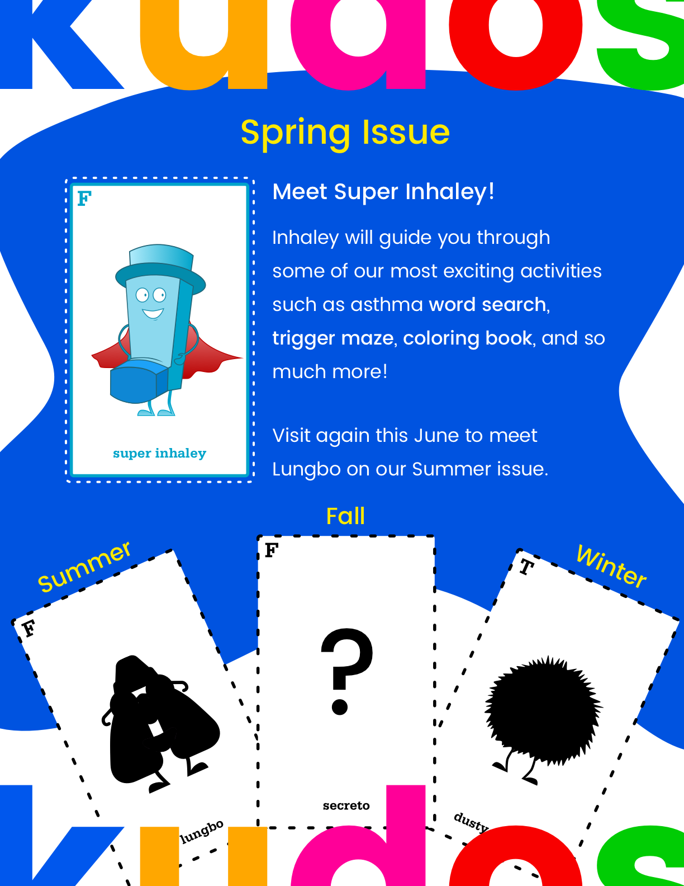
VIBES Magazine Cover Page
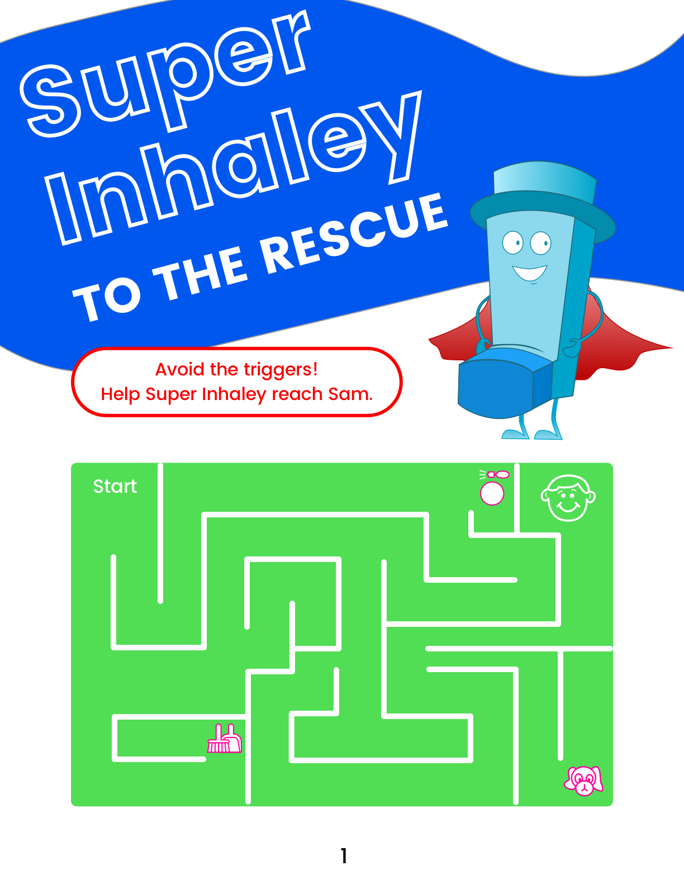
VIBES Magazine Maze Page

VIBES Magazine Data Page
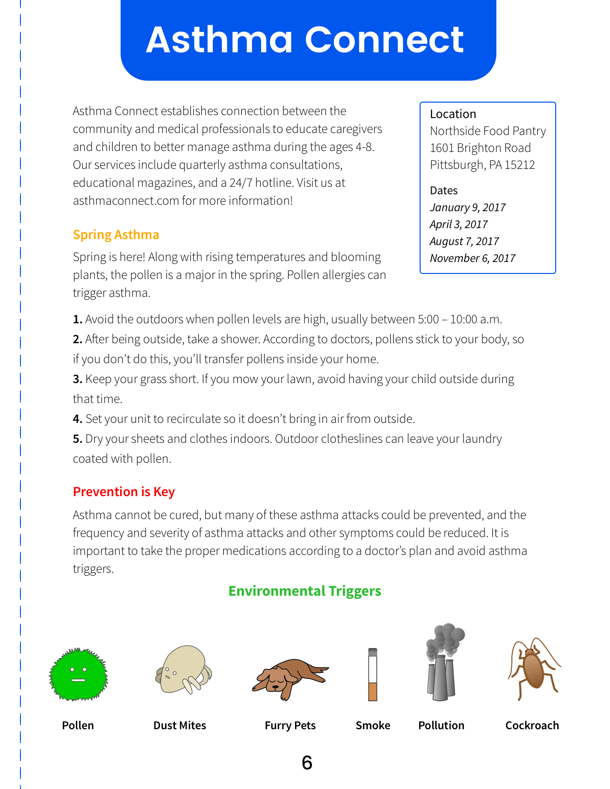
VIBES Magazine Caregiver Tear Out
We also created a 24/7 hotline. Where users can call and find answers to questions regarding their children’s asthma. This includes a daily asthma forecast and local medical resources.
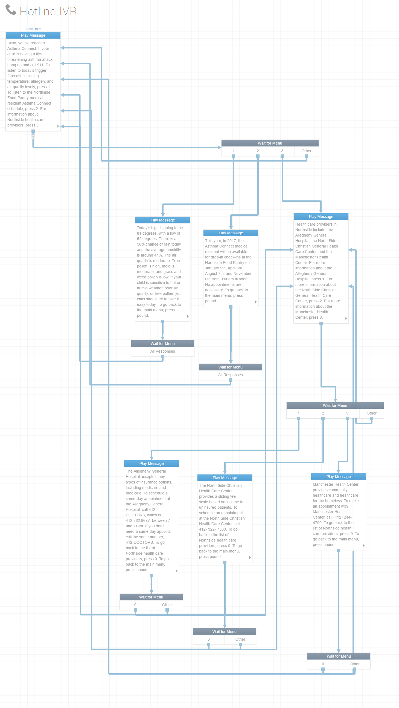
Asthma Connect Hotline Diagram
Asthma Connect Hotline Prototype
Lastly, we created a general facing website. The website provides childhood asthma information as well as regularly updated insights and data based on what we have learned through in-person consultations.

Asthma Connect Website Home Page
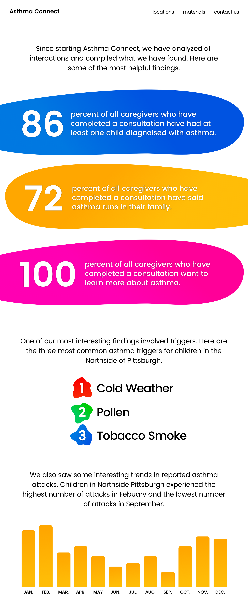
Asthma Connect Website Findings Page
Asthma Connect Website Prototype